Attività motorie
Tanti sport da scoprire attraverso giochi e pratica.
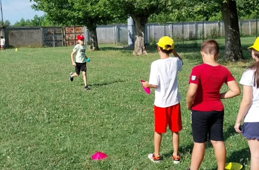
Attività ludiche ed espressive
Giochi guidati, invenzioni e costruzioni.
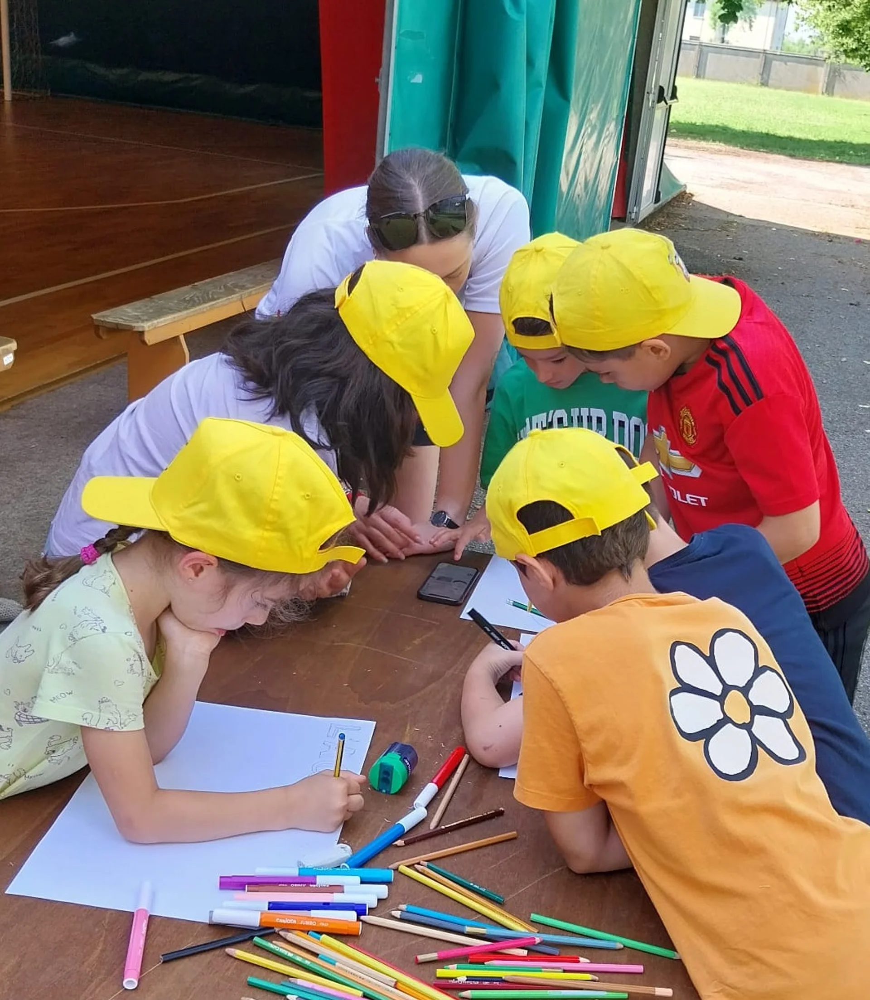
Attività manuali
Laboratori che permetteranno di stimolare la percezione sensoriale
e scoprire il mondo attraverso la manipolazione di materiali comuni e meno comuni.
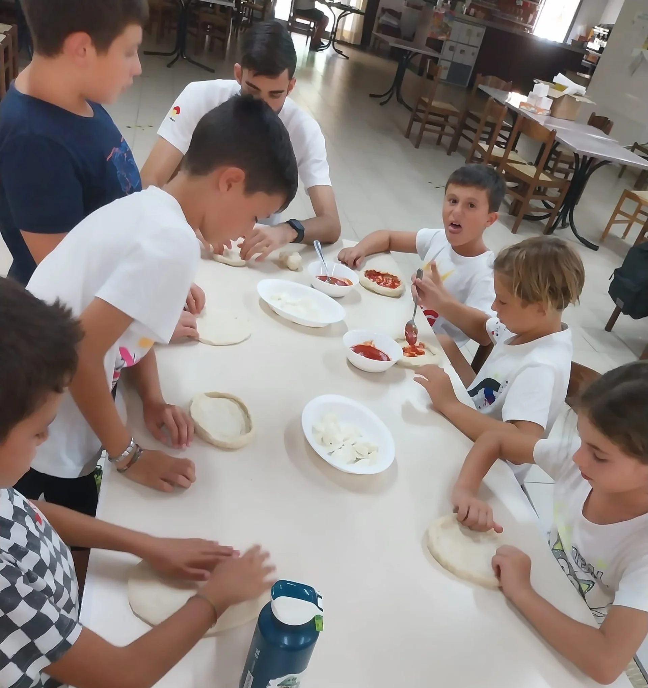
Attività artistiche
I bambini potranno dipingere e disegnare, non solo con un foglio e una matita,
ma anche con strumenti, superfici e tecniche artistiche diverse.
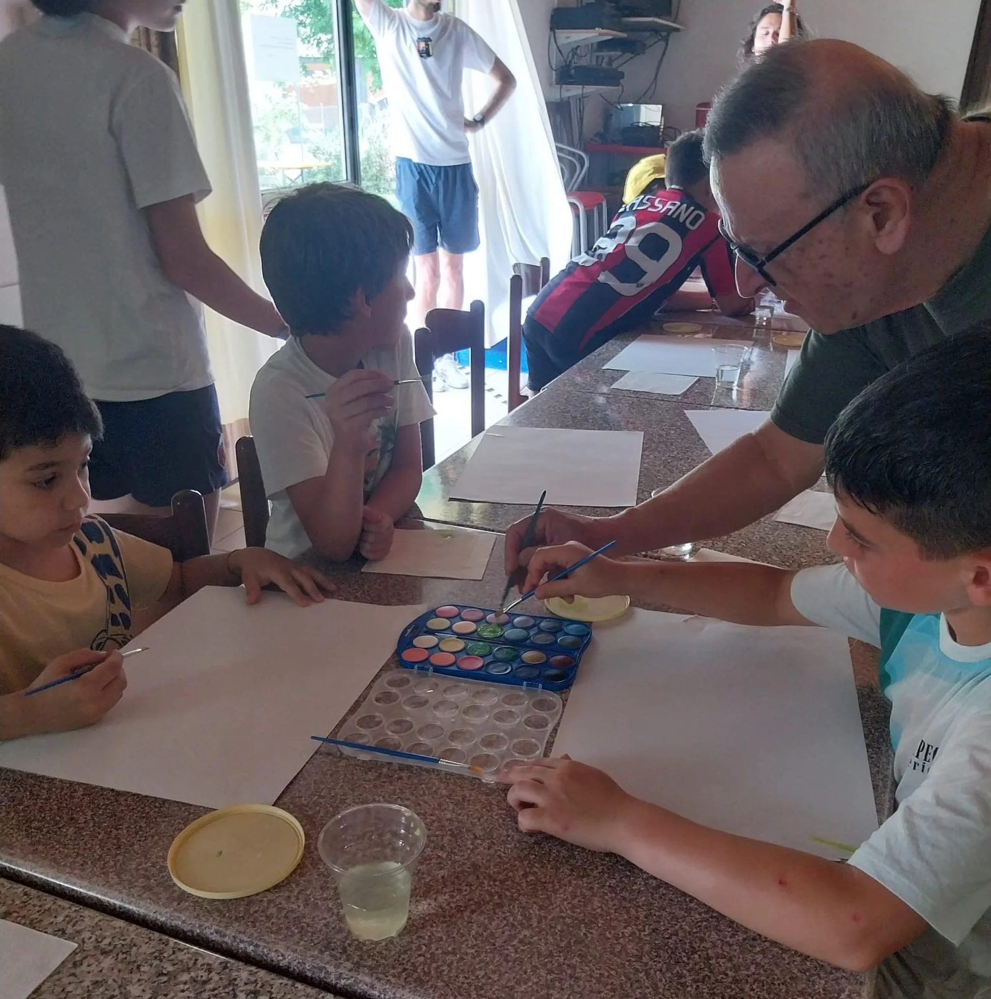
Attività di scrittura creativa
I bambini potranno inventare testi, frasi e slogan, proponendoli al gruppo
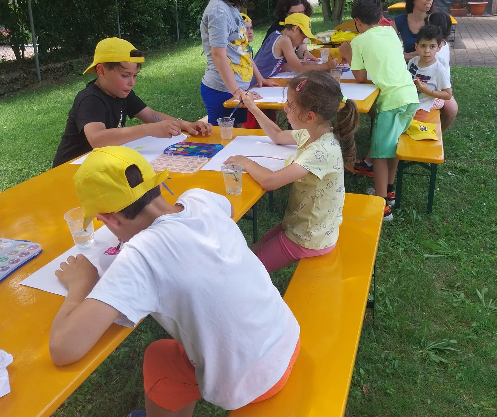
Attività di lingue
Attraverso giochi ed attività, si impareranno diverse lingue
tra cui inglese, francese, tedesco, spagnolo, LIS (lingua dei segni) e non solo.
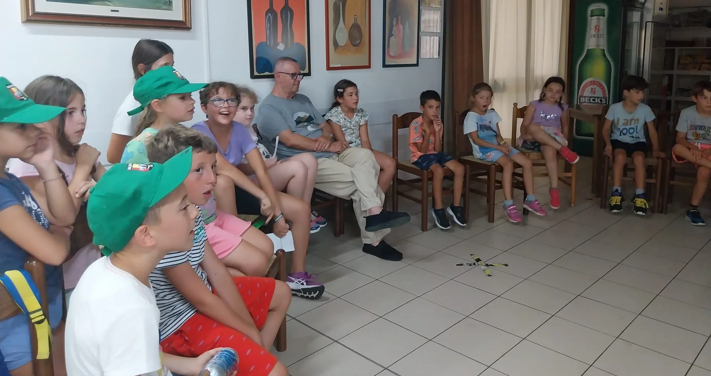
Attività musicali
I bambini potranno creare "momenti musicali" a gruppi,
attraverso le varie forme musicali come la Body Percussion.
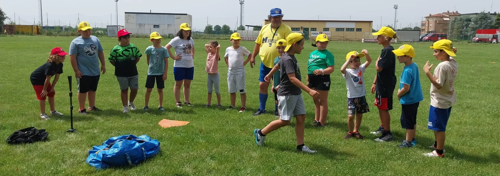
Attività scientifiche
Grazie a dei mini laboratori scientifici,
i bambini sperimenteranno e conosceranno il mondo della scienza.
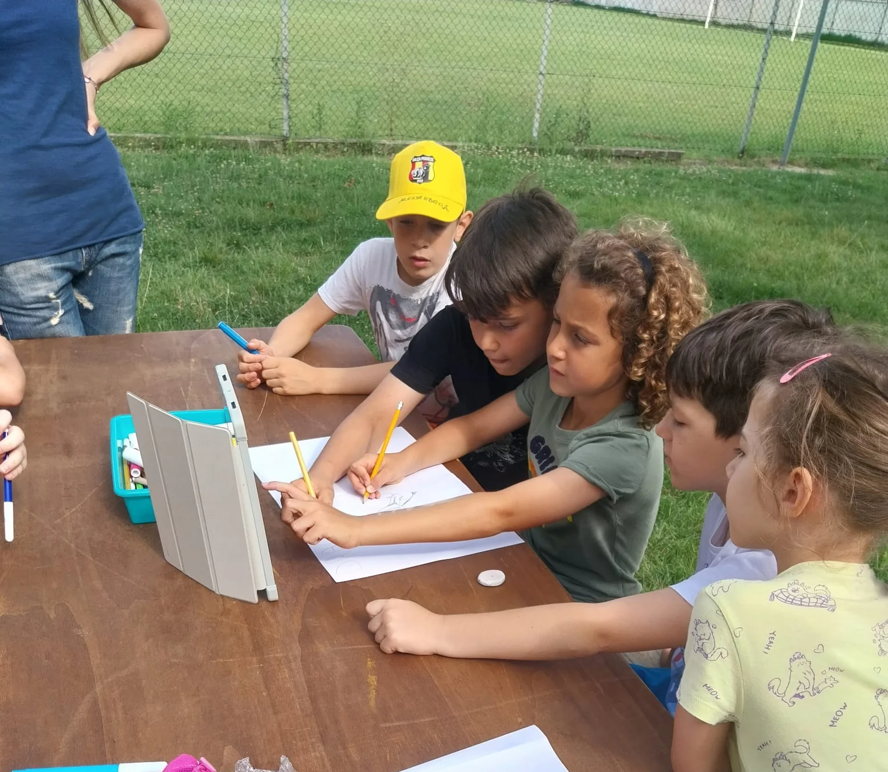
Attività ecologico-ambientali
Cura dell'orto, cura degli spazi verdi e raccolta differenziata dei rifiuti.
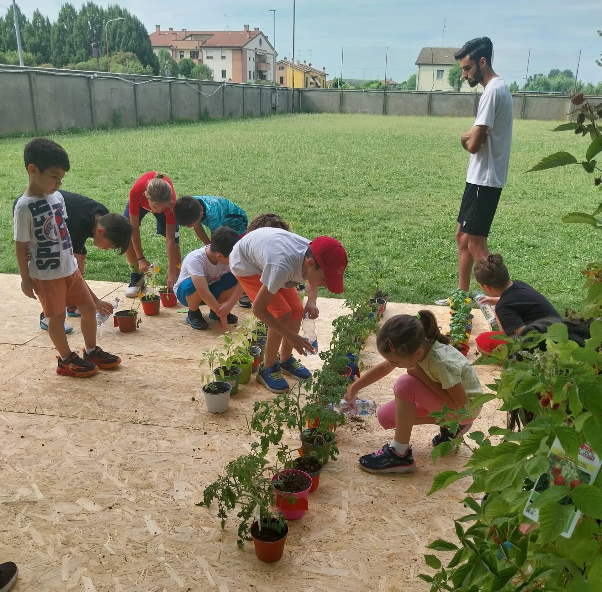
Outdoor education
Esperienze all’aria aperta.
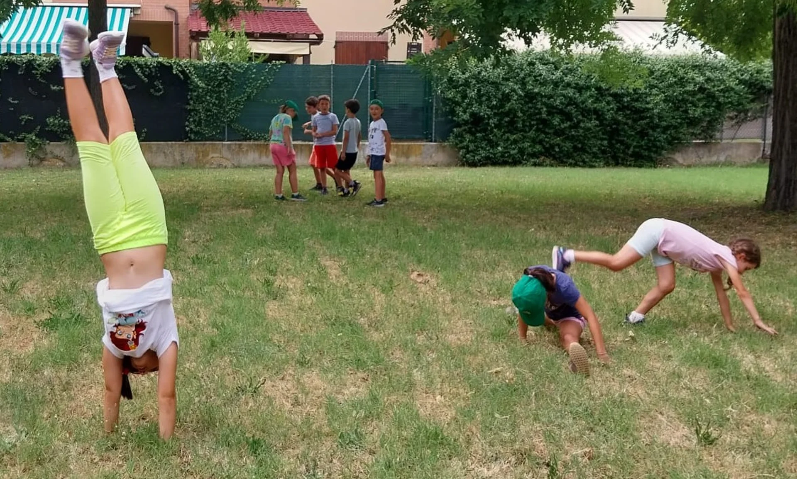
Uscite guidate
A piccoli gruppi si potrà esplorare il territorio e gli ambienti vicini
con lo scopo di favorirne la conoscenza e promuovere la capacità di orientamento ed autonomia,
coinvolgendo realtà associative e di volontariato.
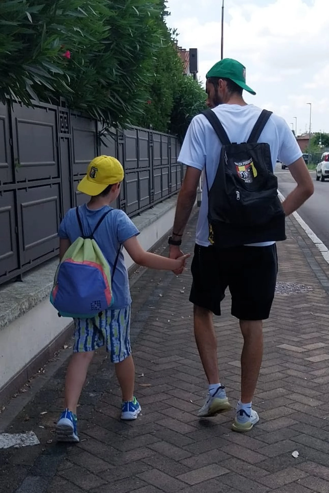
Dove verrà svolto?
Dal 6 Luglio al 28 Agosto presso la Scuola dell'infanzia di Baricella
Dal 31 Agosto fino al 4 Settembre presso il Centro Sociale "La Villa"
Quanto durerà?
Durerà dal 6 Luglio 2026 al 4 Settembre 2026,
Esclusa la settimana dal 10 al 14 Agosto
Chi può presentare domanda d'iscrizione?
Possono presentare domanda d'iscrizione i genitori dei minori residenti e non residenti nel Comune di Baricella,
che abbiano frequentato la scuola dell'infanzia, primaria e secondaria di primo grado, nell'anno 2025/2026.
La società Balça Poggese SSD a RL, farà richiesta per l'adesione del "Progetto per il contrasto della povertà educativa e la conciliazione vita-lavoro: sostegno alle famiglie per la frequenza di centri estivi. Anno 2025" promosso dalla regione Emilia-Romagna.
Cosa portare al campo?
Zaino, borraccia, cambio vestiti, compiti e una sacca con lenzuolo e cuscino per i più piccolini!
È previsto il pranzo al sacco?
Si! Il mercoledì è previsto il pranzo versione pic-nic!
Ciò significa che sarete voi a decidere cosa far mangiare al vostro bambin*.
Quote iscrizioni per NON ISCRITTI nella stagione sportiva 2024/2025 a Balça Poggese
|
Singolo |
Fratello (dal 2° figlio) |
| Quota 1 settimana |
98.00€ |
73.00€ |
| Quota 2 settimane* |
185.00€ |
135.00€ |
| Quota 3 settimane* |
275.00€ |
200.00€ |
*UNICA SOLUZIONE: da pagare interamente in un unico bonifico
Quote iscrizioni per i soli ISCRITTI nella stagione sportiva 2024/2025 a Balça Poggese
|
Singolo |
Fratello (dal 2° figlio) |
| Quota 1 Settimana |
90.00€ |
67.00€ |
| Quota 2 Settimane* |
170.00€ |
125.00€ |
| Quota 3 settimane* |
250.00€ |
180.00€ |
*UNICA SOLUZIONE: da pagare interamente in un unico bonifico
La quota di iscrizione è comprensiva di tutte le attività che si svolgeranno al centro e la tariffa mensa.
Altre modalità d'scrizione
| Mezza giornata* |
Singola giornata |
| 60€ a settimana |
35€ al giorno |
*valido solo nel periodo dal 9 al 27 giugno, in previsione dei PON scolastici
Il pagamento delle quote settimanali è anticipato e solamente a mezzo bonifico bancario.
E' possibile effettuare un unico bonifico per le iscrizioni di due o più fratelli;
in tal caso è necessario indicare nella causale i dati di ogni singolo bambino/a.
(Esempio: Mario Rossi - Baricella - settimana 1,2,6,7; Alice Rossi - Altedo - settimana 1,2,6,7).
Dati Bonifico
Intestatario: Balça Poggese SSD a RL
IBAN: IT 96 I 0707236881000000720829
Causale: Nome bambino/a + Centro Estivo Baricella + settimane prenotate
La causale va rispettata integralmente.
Rimborsi
NON sono previsti rimborsi per settimane già pagate.
Possibile cambio settimana solo in casi particolari.
I rimborsi sono previsti SOLO in caso di malattia,
ove il minore non frequentasse l'intera settimana scelta.
E' possibile richiedere l'iscrizione ad un'altra settimana o il rimborso della retta inviando,
ENTRO 2 GIORNI SUCCESSIVI ALL'INDISPONIBILITA', il certificato medico del pediatra a mezzo email.
Conciliazione Vita-Lavoro 2026
E' stata inviata richiesta di adesione al progetto per il contrasto alle povertà educative e la conciliazione vita-lavoro,
sostegno alle famiglie per la frequenza di centri estivi per l'anno 2026, promosso dalla regione Emilia-Romagna.
Prossimi aggiornamenti verrà condivisi.